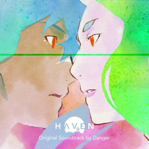

Artist known now for making some music. Franck Rivoire better known as Danger shows us his career transition.
Danger is an artist who has been influenced by Capcom or Konami. At the beginning, he started as a graphic designer by creating a comic strip under the name of his pseudonym “Danger”. Having done music theory for several years, he focused on electronic music, which is when his career began.
In 2014, he released his EP named July 2013. This EP is about the creation of his mask that he created. This mask is strongly inspired by the universe of video games. It reminds us of the black mages of the video game saga Final Fantasy made by Square Enix. This mask is for him, a way to beat his shyness. In 2017, he released his first album called Taiko. He will do the first parts of the tour with Madeon or Porter Robinson. Moreover, his music names have a little specificity. These are the times when Danger finished his compositions, except for the remixes he does. But he didn’t make music only for himself!
While composing his own music, he also participated in the creation of music for video games. In particular at The Games Bakers, a French video game company based in Montpellier. He composed for two games. Furi and Haven where he composed 5 musics for Furi, a Shoot’em up where you have to beat the guardians to finally have freedom in a prison. And Haven where he did all the soundtrack of the game.
I worked on the music during the whole development of the game. I started when Haven
was still just characters and a script written on a few sheets of paper, and I continued
until... three weeks ago! At the last moment, I was still finishing little things on some of the
music.
But it’s not just here that video games are taking hold